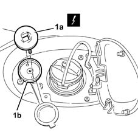
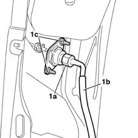

1043A30 gpl filler fitting r r
- Path
- Procedures > 10 ENGINE UNIT > 1043 LGP TANK AND PIPES > 1043A gpl tank > 1043A30 gpl filler fitting r r
- Kind
- repair procedure (removal / refitting; the operation number is the code)
- Applies to
- engines: 1.6 16v; all production periods; only with equipment: GPOWER
- Interactive page
- https://sloeber94.github.io/elrnDB-fMltpl/en/#/2891496
Applies to: engines: 1.6 16v; all production periods; only with equipment: GPOWER and Euro 3
 Removing
Removing
 Refitting
RefittingDrain the section of the pipe from the recharging filler to the tank, following the procedure and the instructions given 1043A02 lpg system lines pipe draining operations .
Place the car on a lift.
- 4450B08 right rear wheel r r .
7055B43 REAR WHEEL ARCH liner (one), left or right - R.R. .
1. Using the tool (1a) inserted in the special openings, undo the cup (1b) from the LPG filler.
 | Name | Country |
|---|---|---|
1a | Spanner | 1.870.794.000 |

Applies to: engines: 1.6 16v; all production periods; only with equipment: GPOWER and Euro 3
1. Undo the connector (1a) for the LPG filler (1b), then undo the nuts (1c) and remove the LPG filler.

Applies to: engines: 1.6 16v; all production periods; only with equipment: GPOWER and Euro 3
Refitting
RemovingPosition the LPG filler and secure it using the nuts.
Connect the LPG pipe to the filler and tighten it to torque.
 | Fastening | Component | Ø | Value (daNm) |
|---|---|---|---|---|
- | Connection | PIPE FROM FILLER TO LPG TANK | 1/4 GAS | 1.6 |
Using the special tool, tighten the LPG filler cup.
| Name | Country |
|---|---|---|
- | Spanner | 1.870.794.000 |
7055B43 REAR WHEEL ARCH liner (one), left or right - R.R. .
- 4450B08 right rear wheel r r .